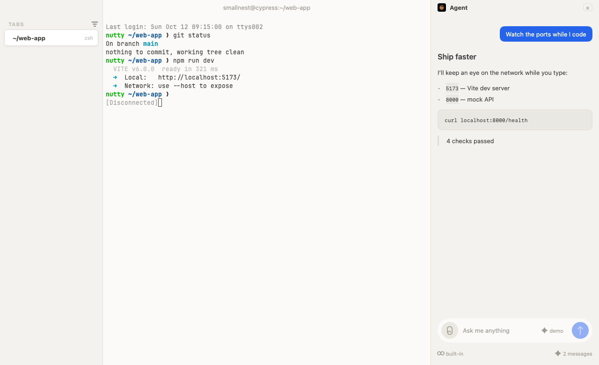
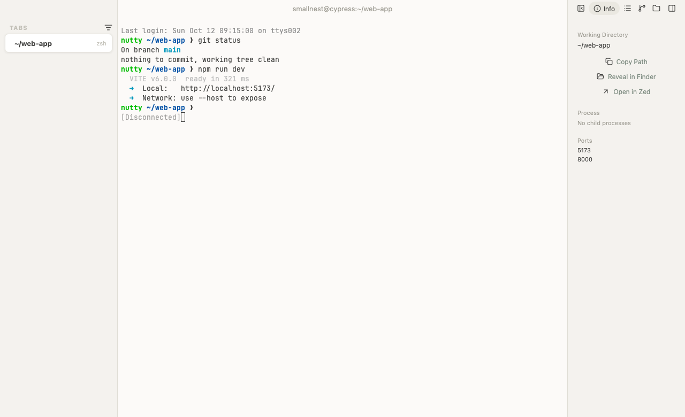
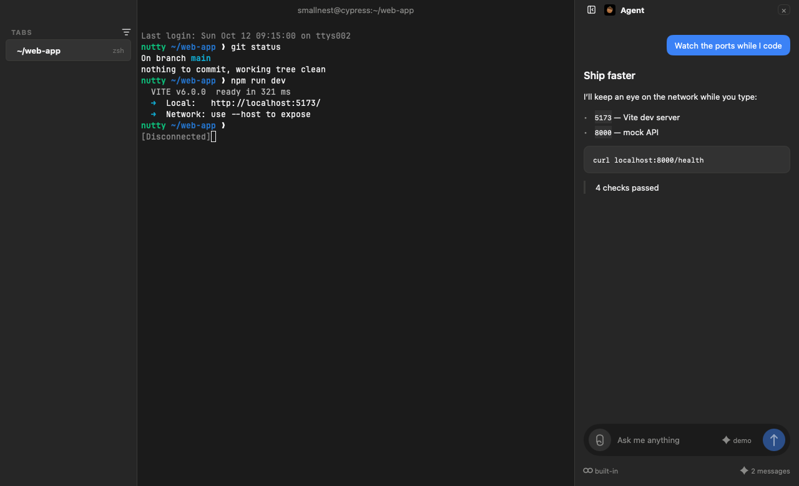

Nutty
A native macOS terminal app.
A faithful reimagining of otty, built on MyGo, uix and onevra. Designed for anyone who cares about the feel of every keystroke — and for the code agents you already run.

Simple where you start.
A terminal should open to a prompt, not a tour. Nutty grows with you — splits, tabs, and an agent panel when you need them.
Plain shell
A prompt and a scrollback. Reliable, and nothing more.
Native macOS terminal
Tabs, splits, Ghostty themes, a command palette, and an agent chat — all in a single 19 MB app.
Agent dev environment
A platform to configure, an account to create, a model to pay for.
Modern from the ground up.
Every detail of the renderer, the colors and the keys, tuned the way otty tunes them.
JetBrains Mono & Unicode
Otty's own font, bundled — ligatures, full Unicode, and clusters, at the size you set.
True color & rich styles
24-bit color, bold, italics and underlines, exactly as the program asked.
Beautiful themes
Dozens of Ghostty schemes, or follow the system's light and dark with your own colors.
Interactive links
Command-click a URL, a file, or a path with a line number and jump straight there.
Native macOS feel
Traffic lights, the system appearance, and a GPU renderer — it is a real Mac app.
Every command, a shortcut away
The command palette is one key away: themes, splits, tabs and font size.
Settings, otty's way
The same categories as otty, the same defaults — font, cursor, opacity, saved as JSON.
One window, many threads.
Every tab is its own shell; every shell can split, and the window shows what is happening on each.
Tabs, your way.
Vertical, in otty's rail — each shell keeps running, named by the directory it is in.
Splits & panes.
Split right or down, drag the divider, and hop panes with ⌘] and ⌘[.
Watch ports & processes.
The info panel lists the ports the window listens on and the process each session runs.
Every session, its own home.
New tabs open in your working directory; close the window and everything ends together.

Every command, a shortcut away.
The palette finds any action; the keys you already know just work.
Command palette
Fuzzy-find any action — tabs, splits, themes, font size, panels.
Ghostty themes
Twenty-five themes. Pick one for light windows and another for dark.
Font size
Bigger, smaller, or back to the default — instantly.
Panels
Toggle the rail, the info panel and the agent chat on and off.
Plays well with the agents you already run.
A chat panel beside the shell, where the answer renders as markdown — lists, code blocks, quotes — as it streams in.
